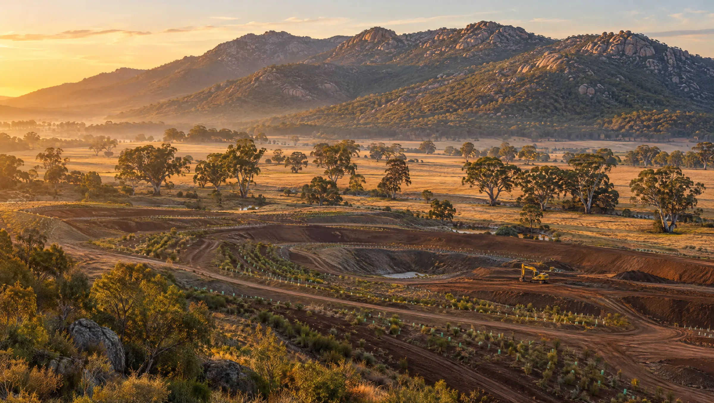
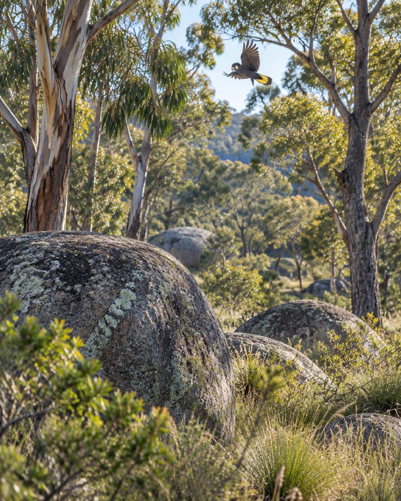

Langi Ghiran Recycling · Near Ararat, Grampians region
Recycling soil. Restoring land. Rebuilding a landscape.
Recycling isn't only about what we recover today. It's about what we can restore for tomorrow.
From extraction to restoration
A different kind of recycling facility
The story of this property once centred on what could be taken from the land. Our future is about what can be returned to it.

LG Recycling is a Recycle Group soil-recycling and land-rehabilitation project on the western boundary of Langi Ghiran State Park. The property was once a sand mine and quarry, and extraction significantly altered parts of the landscape.
We process and recycle suitable soil while progressively rehabilitating those disturbed areas. Where appropriate and permitted, recovered soil helps rebuild landforms, restore levels and contours, and repair the ground left behind by extraction.
It's the circular economy applied directly to the land.
Soil checker
Can we take your soil?
Answer a few questions and find out in under a minute whether your material is likely to suit LG Recycling, and what to do next.
- We take soil only: fill, clean fill, mixed fill and mudstone
- Every load needs an approved soil declaration
- No asbestos, reportable priority waste or waste acid sulfate soil
What are you looking to get rid of?
Select everything in the load.
A few quick safety questions.
About the material and the site it's coming from.
A guide only. Acceptance is confirmed after we review your soil declaration and inspect the load on arrival.
The vision
From a former quarry to a downhill bike track.
The land is being rehabilitated and turned into a downhill mountain-bike park: three runs for beginner, intermediate and expert riders, a kids’ jump park at the bottom, and a pulley lift to take riders back up the hill. Drag the slider to see the idea.

 Former quarry
The vision
Former quarry
The vision
Illustrative concept only, not a photograph of the property or the final track design.
- Beginner, intermediate and expert runs
- Kids’ jump park
- Pulley lift back to the top
- 16 glamping sites
- Walking trails
- Native vegetation
- Habitat areas
- Landscaped open space
- Recreation areas
- Environmental interpretation
- Community facilities
Recycle Group's involvement with the property begins. More than three decades of working on, and understanding, the land.
Recycling suitable soil and progressively rehabilitating the areas disturbed by sand extraction.
Three downhill runs, a kids’ jump park and 16 glamping sites on restored land, with a lift back to the top, for riders, families and the community to enjoy.
Our purpose
Soil recycling with an outcome.
We don't simply want to process soil. We want to leave the land better than we found it.
Recycle
Recover and process suitable soil instead of disposing of a valuable material.
Rehabilitate
Progressively repair areas affected by historic sand extraction and quarrying.
Restore
Work towards a stable, attractive landscape that suits its remarkable surroundings.
Return
Hand the land back to the community as a downhill bike track and a place for nature.
The land beneath our feet
Suitable soil is a resource, not automatically waste.
Construction, infrastructure and development projects generate enormous volumes of soil. LG Recycling creates a responsible pathway for it, and every load helps restore a previously disturbed property.
What we can take
- Fill soil
- Clean fill with rock
- Clean fill with vegetation
- Mixed fill
- Mudstone
All subject to an approved declaration, our environmental approvals and inspection on arrival. Full acceptance criteria
What we can't take
- Asbestos or asbestos-containing material
- Reportable priority waste (categories A–D)
- Waste acid sulfate soil
- Material showing signs of contamination, without an assessment
- General rubbish, green waste or demolition waste
Loads that don't match their declaration may be rejected at the producer's cost.
How it works
From your site to ours, in four steps.
Nothing is delivered until the material has been declared and approved. That's how we keep the land we're restoring clean.
Enquire
Tell us about the material, volume and timing.
Declare
Complete the online soil declaration, with a waste classification if you have one.
Approval
We review the declaration and confirm whether the material can be accepted.
Deliver
Check in on arrival, follow the site rules, and each load is inspected before tipping.

Lar-ne-jeering
A landscape with a story thousands of generations old.

Home of the Yellow-tailed Black Cockatoos
Named for an extraordinary neighbour.
LG Recycling takes its name from Langi Ghiran. Parks Victoria records the mountain's Djab Wurrung name as Lar-ne-jeering, meaning "Home of the Yellow-tailed Black Cockatoos". It is a place of deep cultural and spiritual significance.
Operating beside a landscape like this brings a responsibility to care for the land we occupy.
Find us
Beside Langi Ghiran State Park.
Deliveries are by prior approval only. Read the site safety rules before you arrive.
Location
Western boundary of Langi Ghiran State Park, near Warrak and Ararat in the Grampians region, VIC
Street address TBC
Opening hours
Monday to Friday, 7am – 3pm
On site
UHF two-way radio on channel 61, high-vis and safety boots
Before you come
An approved soil declaration for every load
Enquire
Tell us about your soil.
Send us the details of your project and we'll come back to you on acceptance, timing and next steps.
Call
Contact name and phone TBC
Email TBC
Disposing of soil? You'll also need to complete a soil declaration before delivery.
Thanks, your enquiry is in.
We'll be in touch response time TBC. If you're disposing of soil, you can complete the soil declaration now.
Got suitable soil?